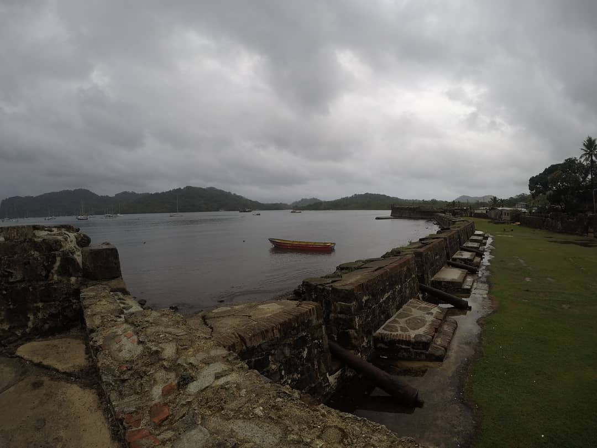
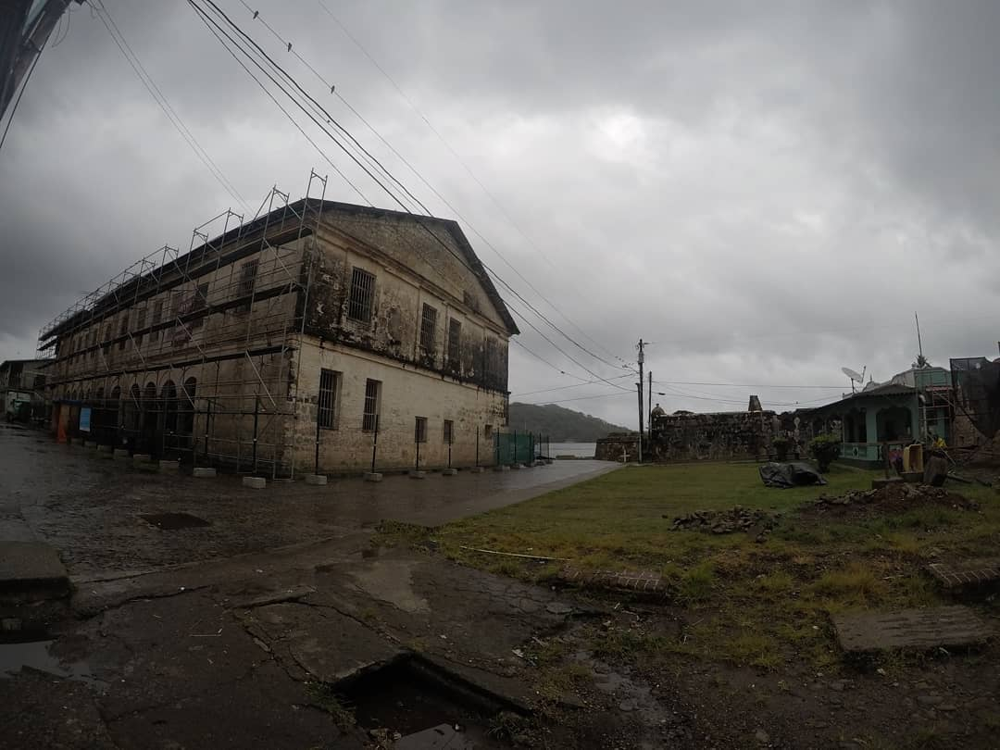
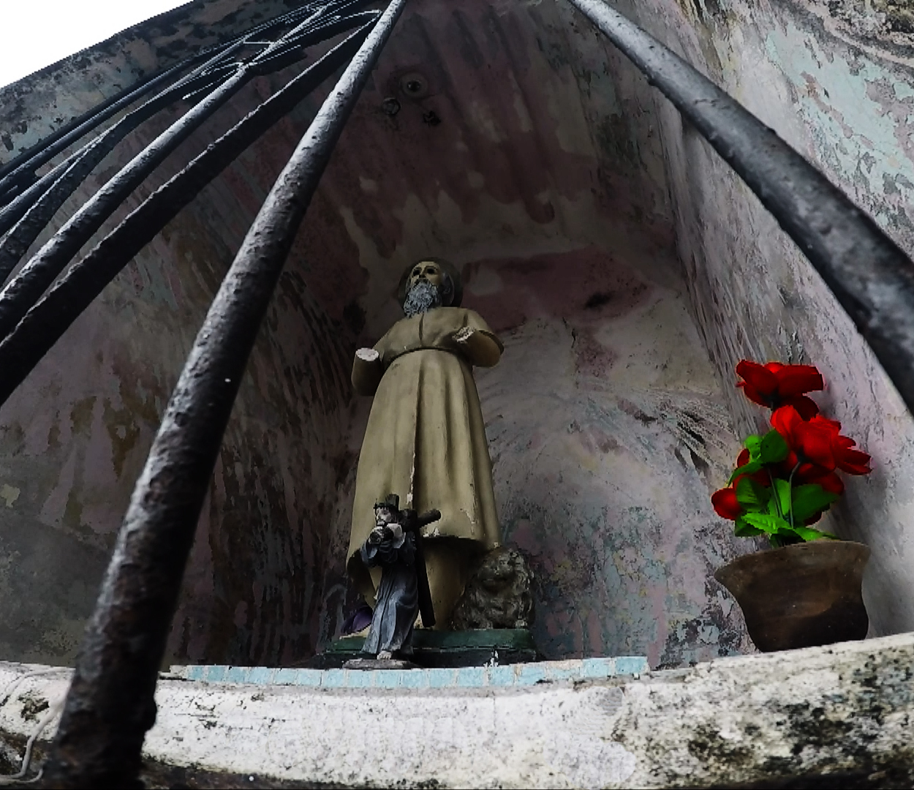

Por Gonzalo Volpe Gómez
Llegué a Portobelo un mediodía de Marzo y mis planes de cruzar a la Isla Drake se esfumaron con la primer caída de agua, la cual se terminó transformando en una tormenta infernal. Lo único infernal no fue la lluvia, cada rincón de Portobelo me hacia sentir en una película de terror, sus monumentos coloniales antiguos, el edificio de Aduana, los cañones montados en el fuerte San Jerónimo, absolutamente todo. Sí, es verdad, el clima y la poca gente que había transitando las calles ayudaba mucho a que mi cabeza se sumerja cada vez más en la idea de que estaba en un pueblo fantasma, embrujado y con miles de historias esperando que alguien las cuente.
Fuerte San Jerónimo, Portobelo, Panamá.
Portobelo fue descubierto por Colón en 1502 y fundada en 1597 por Francisco Verlarde Mercado. En los años siguientes se estableció como uno de los puntos más importantes de exportación de plata del Virreinato de Nueva Granada.
Llegar en bus desde Ciudad de Panamá es sencillo pero lleva unas 3 horas de ida y unas 3 horas de vuelta, el tráfico o "el tranque" como lo llaman ahí suele ser fatal casi todos los días. Lo primero que tenemos que hacer es dirigirnos a la estación de buses Albrook y ahí tomar un bus hasta Colón, ojo, no vamos hasta Colón, nos tenemos que bajar en Sabanitas, ya que ahí haremos la combinación hacia Portobelo. No tengan miedo ni verguenza en preguntar, la gente de ahí y los chóferes en particular suelen ser súper amables. Desde la calle donde nos deja el bus en Sabanitas, solo hay que caminar hacia nuestra izquierda (mirando hacia la vereda) y en la esquina doblar levemente a la derecha. Ahí tomaremos otro bus que dice "Portobelo". El costo total, sumando los dos buses, es de unos 5 dólares aproximadamente. El primero es una especie de servicio de larga distancia y el segundo es un típico bus diario panameño plagado de colores, dibujos, fotografías en las paredes y obviamente, reggaeton.
Edificio de Aduana, Portobelo, Panamá.
Primero lo primero, llegué muerto de hambre y me metí en uno de los pocos restaurantes que se encontraba abierto a metros de la parada de bus. Por 14 dólares comí uno de los pescados más rico que probé en mi vida, estaba relleno de cebollas y verduras y acompañados con papas fritas. Un gran acierto.
Después de comer decidí ir a dar una vuelta al pueblito que es verdaderamente pequeño. En la zona aledaña a la ruta, se encuentran las casas y caminando dos cuadras para el lado del mar ya tenemos todos los edificios históricos, los fuertes y varios detalles macabros que van desde una cruz blanca a la vera de la entrada a la zona arqueológica hasta la estatua de un santo sin manos con un Jesús pequeño debajo de él.
Escultura en la entrada a la zona arqueológica, Portobelo, Panamá.
Cada detalle contribuía a que mi imaginación vuele más y más, me encontraba en un lugar único que se había mantenido intacto desde la época de piratas. La lluvia, que cada vez crecía más, me había hecho descartar la posibilidad de hacer playa pero a su vez me regalaba un marco diseñado a medida de una ciudad terrorífica. ¿Y yo? Yo tenía una cámara en mano. ¿Qué más necesitaba? Una de las sensaciones más lindas que siento al viajar es el de la enormidad, percibir que tengo un mundo abierto por delante, sin descubrir y que puedo recorrer a mi antojo los rincones que quiera, ir y volver, volver a irme, pararme a mirar, comer, andar, todo. Y así me sentía en ese momento, en escasos minutos y bastante intuitivamente, decidí hacer un pequeño guión que representase la sensación de "miedo" que me había generado perderme por las callecitas de Portobelo. Era un nene pequeño jugando a los fantasmas en un pueblito casi deshabitado, haciendo caras adelante de la cámara, filmando las escenas mil veces, porque sí, no tengo ni idea de actuación jajaja. Fue un momento increíble donde estaba haciendo lo que quería, lo que me gusta y donde seguí aprendiendo a comunicar, esta vez desde el terror, lo que amo.
En fin, lo importante es que me di cuenta que los lugares de playa son mágicos por sí mismos, no importa si hay tormenta, nieve, o suceda lo que suceda, si nosotros contamos con imaginación, curiosidad y sobre todo ganas de vivir el lugar en el que estamos, vamos a pasar un momento increíble. Una de las mejores tardes que pase en una playa y sí, estaba lloviendo.
El video que vas a ver a continuación es una representación creativa y bizarra. Portobelo no es realmente un pueblo macabro y todo lo que sucede es mera ficción. ¿Por qué aclaro esto? Porque algunas personas de Panamá se tomaron en serio el video, cuando a simple vista se nota que no es verdad.